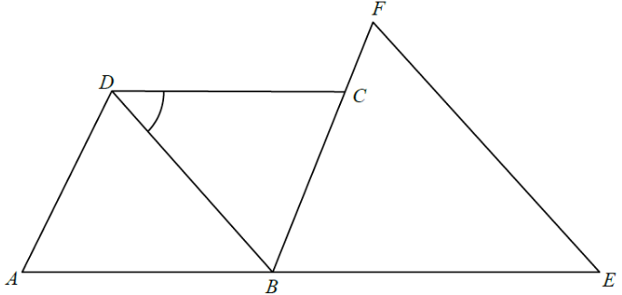

幾何 · 菱形與等腰三角形

頂角 $\angle BEF=56^{\circ}$，兩個底角平分餘下的 $124^{\circ}$：
$$\angle EBF=\angle BFE=\frac{180^{\circ}-56^{\circ}}{2}=62^{\circ}$$
$\angle EBF$ 的兩邊是 $BE$ 與 $BF$；既然 $BF$ 就是 $BC$，
$$\angle EBC=\angle EBF=62^{\circ}$$
$$\angle ABC=180^{\circ}-62^{\circ}=118^{\circ}$$
易錯：$A$ 與 $E$ 在 $B$ 的兩側，$BA$ 與 $BE$ 是相反射線，所以兩角互補而不是相等。
$$\angle BCD=180^{\circ}-118^{\circ}=62^{\circ}$$
$$2\angle BDC+62^{\circ}=180^{\circ}\quad\Longrightarrow\quad \angle BDC=\frac{118^{\circ}}{2}=59^{\circ}$$